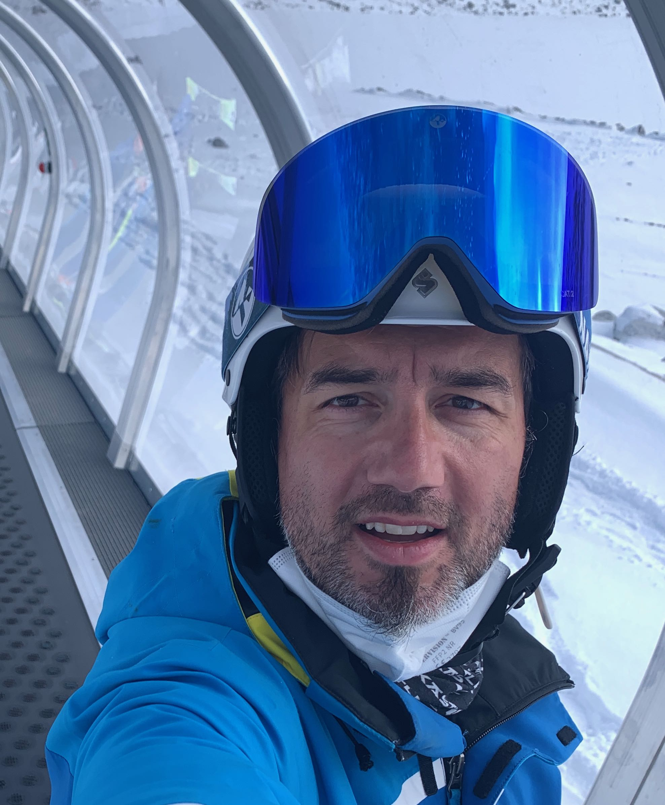

Das Piccoloteam gibt den Kindern die Gelegenheit, den spielerischen Umgang mit den Skis zu üben. Dieses Angebot gilt für alle, ob Anfänger oder kleine Rennfahrer, auch für Nichtmitglieder des Skiclub.
Das Piccolo-Lied, gesungen von der 2. Klasse von Mirco Büsser in Eschenbach

Ansprechsperson:
Jérôme Stillhard